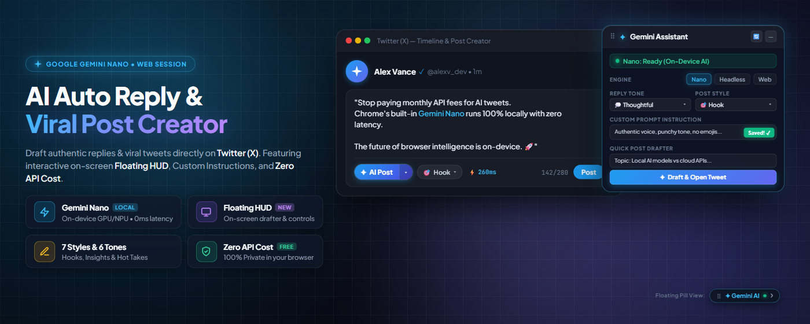
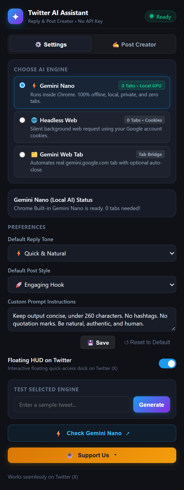

𝕏 (Twitter) Auto Reply & Post Creator No API
One-click context-aware AI replies and viral post generation directly beneath tweets on 𝕏. Powered by Google Gemini & Gemini Nano on-device AI — zero API keys, no monthly fees, and 100% private.
Running local LLMs inside Chrome via Gemini Nano is a game changer. Sub-second response times, zero API bills, and complete privacy since data never leaves your device. Are you moving to local AI yet?
From Tweet to High-Signal Reply in Under 2 Seconds
No API dashboards, no credit cards, and no workflow interruption. Everything happens in-place right on your Twitter feed.
Connect Gemini Session
Log into Google Gemini once in your browser, or enable Chrome's built-in Gemini Nano for zero-tab local AI.
Browse 𝕏 Normally
Scroll your home feed, notifications, or lists. The extension automatically detects active reply dialogs.
Click "✦ AI Reply" & Pick Tone
Choose from 6 targeted tones (Thoughtful, Witty, Support, Counter-Point) to shape your perspective.
Review & Post
The AI crafts the response and auto-inserts it directly into Twitter's composer for your review before sending.
Three Powerful AI Engines. You Choose.
Switch effortlessly between on-device local models, headless web sessions, or automated tab execution based on your machine and preferences.
Gemini Nano
Chrome's built-in on-device AI. Executes directly on your PC's GPU or NPU without sending a single byte over the web.
- Browser Tabs Opened: 0 tabs (Silent)
- Generation Speed: < 250ms (Instant)
- Privacy Level: 100% On-Device Offline
- Cloud Dependency: None (No internet required)
Headless Direct
Direct background requests utilizing your active Google login session cookies. Full Gemini cloud intelligence with zero clutter.
- Browser Tabs Opened: 0 tabs (Headless)
- Generation Speed: ~650ms
- Privacy Level: Direct to Google (No 3rd Party)
- API Key Needed: None (Free Session)
Web Tab Automation
Lightweight tab automation that interacts with gemini.google.com chat DOM. Features smart auto-close so tabs vanish immediately after pasting.
- Browser Tabs Opened: 1 Temporary Tab
- Auto-Close Tab: Yes (Vanish on completion)
- Generation Speed: ~1.5s
- Compatibility: Universal Chrome
| Capability | ⚡ Gemini Nano (Local) | 🌐 Headless Direct | 🗂️ Web Tab Automation |
|---|---|---|---|
| API Key or Credit Card | Not Required | Not Required | Not Required |
| Browser Tabs Opened | 0 Tabs | 0 Tabs | 1 Auto-closing tab |
| Latency | < 250ms (Zero lag) | ~650ms | ~1.5s |
| Data Leaves Your Device | No (100% on-device) | Sent directly to Google | Sent directly to Google |
| Works Completely Offline | Yes | No | No |
| Third-Party Server Intermediary | Zero | Zero | Zero |
Built for Serious Creators & Power Users
Every feature is designed to elevate your Twitter presence with authentic, high-signal conversations while eliminating repetitive drafting.
6 Distinct Tones of Voice
Switch effortlessly between Natural, Agree & Supportive, Thoughtful Insight, Witty Humorous, Counter-Point, and Question to match the conversation mood.
Dual-Mode Post Creator
Beyond replies: craft viral standalone tweets. Use Topic Prompt mode to start from scratch or Draft Polish mode to optimize your rough thoughts into hooks.
Custom Prompt Instructions
Set personal guardrails: specify preferred language (English, Spanish, Indonesian, Japanese, etc.), strict character limits, style guidelines, and forbidden clichés.
100% Client-Side Privacy
No backend server. No telemetry. No database. All requests execute strictly inside your local browser sandbox directly to Google or your local NPU.
Sub-Second Nano Latency
When using Gemini Nano on-device AI, response tokens generate locally at hardware speeds, giving you the fastest possible reply drafting experience.
Native 𝕏 UI Integration
Surgically injected into Twitter’s DOM. Matches dark/light themes cleanly, provides split-button ergonomics, and never blocks your view.
Your Feed and Ideas Stay Yours. Always.
Unlike other AI extensions that route your tweets through unknown third-party proxy servers, our extension is 100% client-side and completely transparent.
Zero Third-Party Servers
We do not maintain any servers, middleware, or relays. Requests run either on your local hardware (Gemini Nano) or directly between your browser and Google Gemini.
Zero Telemetry & Tracking
No Google Analytics, no PostHog, no Mixpanel, no crash report beacons. We have zero interest in tracking who you reply to or what you write.
No Credentials Stored
Your Google and Twitter credentials remain safely inside Chrome’s native cookie jar. We never access, harvest, or transmit your passwords or auth tokens.
100% Open Source
Every line of code is open source and licensed under MIT. You can audit the repository, verify every permission, or run it directly from source unpacked.
See the Extension in Action
Minimal, unobtrusive, and designed to look right at home with Twitter’s modern dark theme.


Frequently Asked Questions
Everything you need to know about engines, pricing, permissions, and compatibility.
Do I need a Google Cloud API key or credit card to use this?
No, absolutely not. You do not need a Google Cloud account, API billing, or any API keys. The extension operates using either Chrome's built-in Gemini Nano Prompt API (local hardware) or your standard logged-in session on gemini.google.com.
Is this extension completely free?
Yes! The extension is 100% free and open source under the MIT License. There are no paywalls, token limits, or premium subscriptions. If you enjoy the tool, you can support its development through Trakteer ID or Buy Me a Coffee.
How do I check if Gemini Nano works on my Chrome?
You can run a quick 5-second check: press F12 in Chrome, switch to the Console tab, and paste 'LanguageModel' in window || 'ai' in window. If it returns true, your browser supports built-in AI! If not, you can enable chrome://flags/#prompt-api-for-gemini-nano, or simply use the Headless Direct engine which works out-of-the-box on every Chrome installation.
Will my Twitter (𝕏) account get banned or flagged?
No. The extension does not post automated bot spam. It acts as an editorial copilot: it drafts an intelligent response and places it in your composer for your review. You choose when to edit, polish, and hit the Tweet button yourself.
Can I customize the reply language and length limits?
Yes! In the extension popup, you can specify custom prompt instructions. You can instruct Gemini to always answer in a specific language (e.g. Indonesian, Spanish, French, Japanese), limit responses to under 200 characters, or instruct it to adopt a specific brand voice.
Start Writing High-Signal Replies on 𝕏 in Seconds
Join developers, creators, and power users who generate engaging replies effortlessly. Zero API key friction. 100% private.